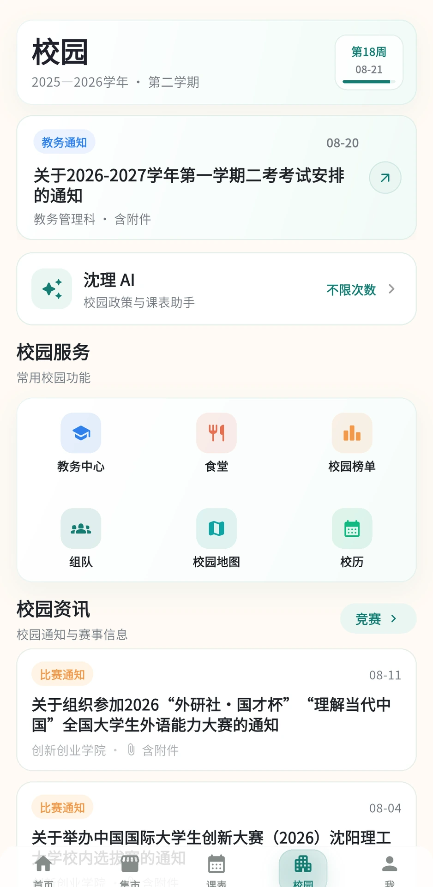
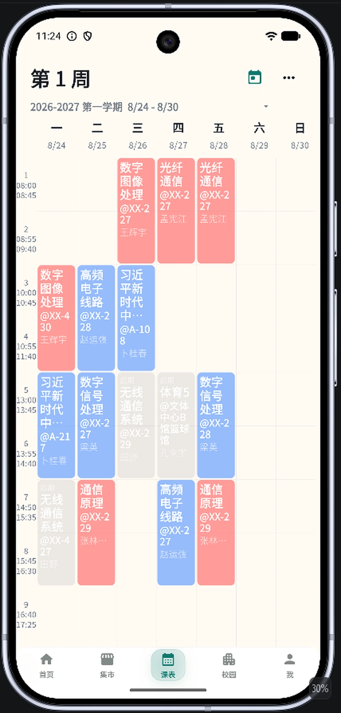
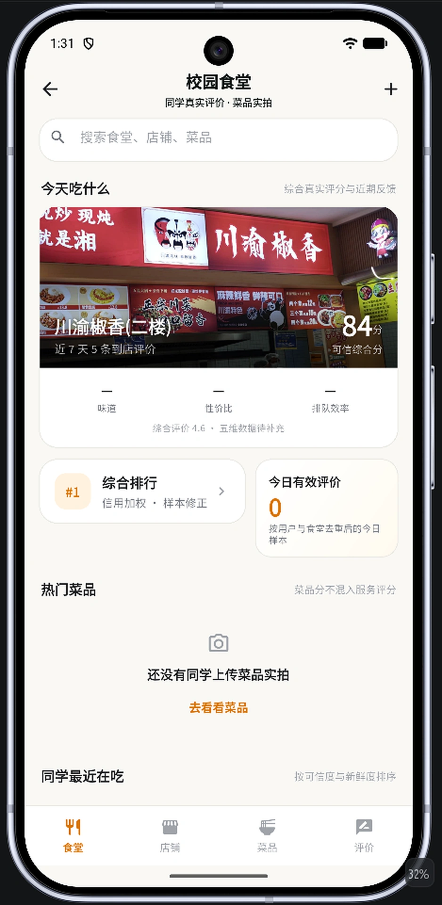

01 / CAMPUS
打开以后，先看到今天。
校园通知、竞赛资讯和常用服务，在首页就能找到。上课前的一眼，先把今天需要的事情理清。
01 / 04

校园首页今天的信息，从这里开始。

由沈阳理工大学学生开发与维护的非官方校园生活工具。
课程与校园资讯，请以学校发布的正式信息为准。
01 / 产品体验 · PRODUCT TOUR
上下滚轮，左右探索 · 也可拖动
校园首页，1 / 4
02 / CAMPUS LIFE
今天去哪吃、有没有同学转闲置、最近大家在聊什么。课余的这些小事，也想有个顺手的去处。
看看店铺评分，翻翻同学的近期评价和菜品实拍。午饭吃什么，今天也可以有点新主意。

03 / SYLU AI
通知里没看明白的安排、学业上的小疑问，先问问沈理 AI。沿着回答中的资料来源，再核对学校原文。
示意内容，用于说明问答方式。实际回答取决于可检索的资料，请核对来源与适用时间。
04 / OPEN SOURCE
沈理校园是一个持续维护的开源项目。从一节课的提醒，到一个页面的细节，很多改进都来自同学的真实使用反馈。
欢迎来看看代码、提一个建议，或把你发现的问题告诉我们。
从校园里长出来，也慢慢长得更好。
BEFORE WE MEET
开始之前，先把这几件小事说清楚。
沈理校园由沈阳理工大学学生开发与维护，是非官方校园生活工具，不代表学校官方立场。涉及教务安排、政策和办理流程，请以学校正式通知为准。
当前提供 Android 稳定版，也可以通过浏览器进入 Web 端。iOS 版本仍在开发适配中，暂不提供安装包。不同端的功能以实际页面为准。
个人教务功能需要按应用内提示完成登录与绑定。沈理 AI 如需使用个人课表、成绩或二课数据，会按用途请求授权。请只在你信任的设备上操作。
可在 下载页重新获取当前版本，或查看 GitHub 发布页。发现问题时，欢迎通过项目 Issues 反馈；请避免附上密码、验证码或完整的个人教务信息。